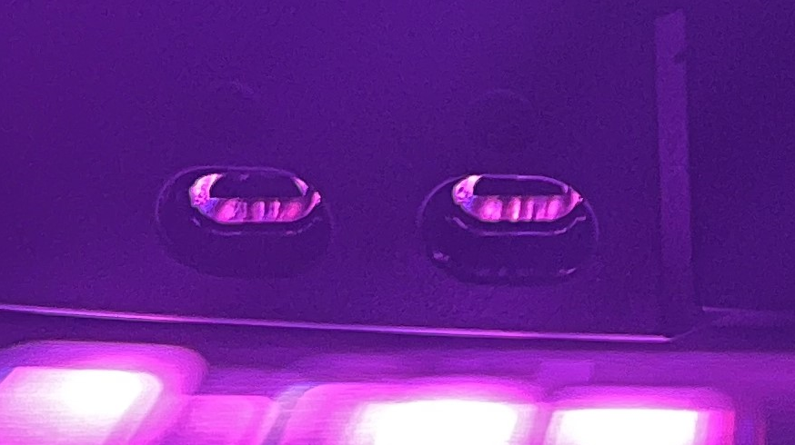
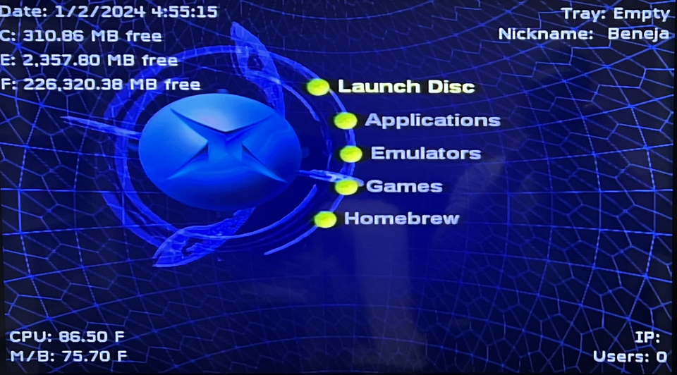
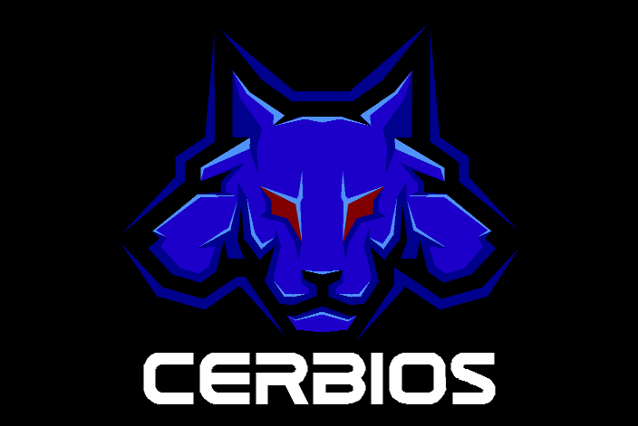
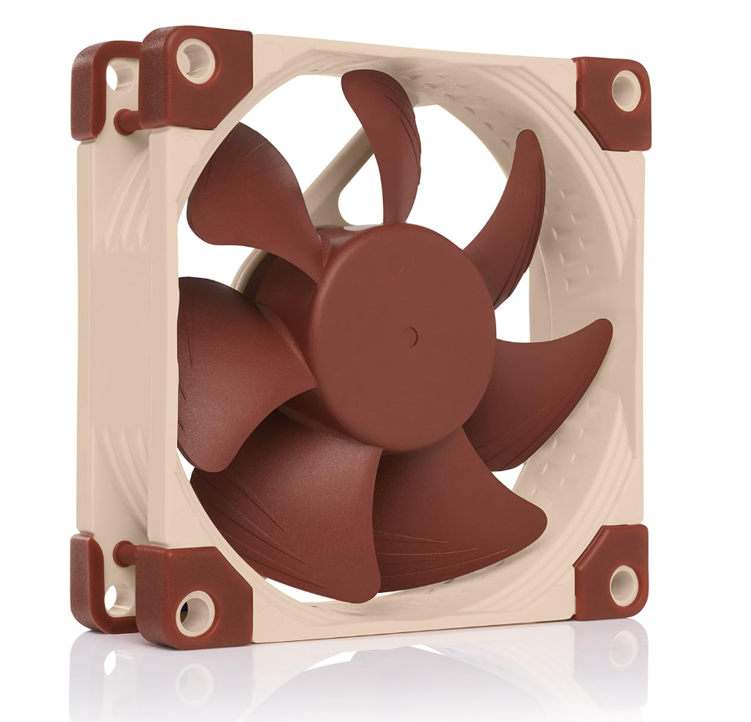
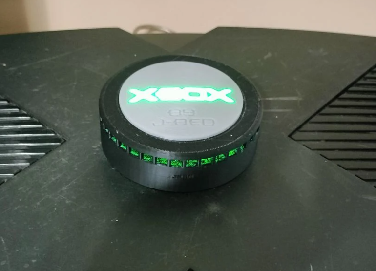
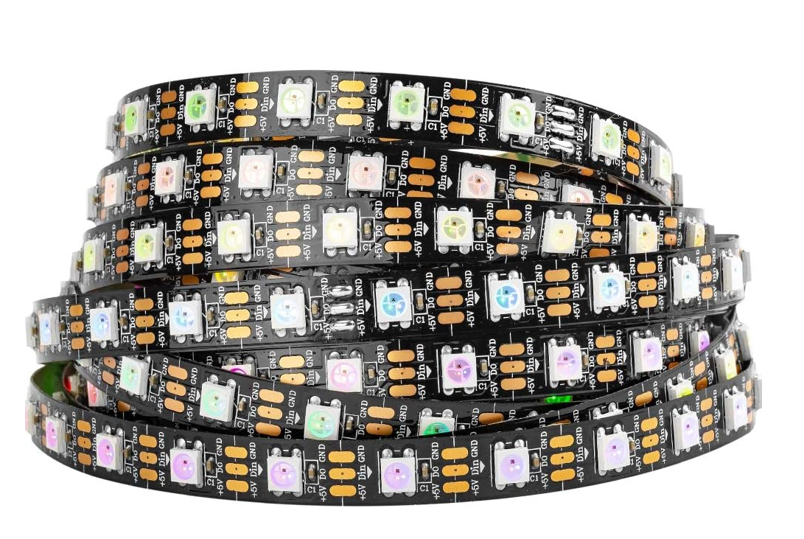
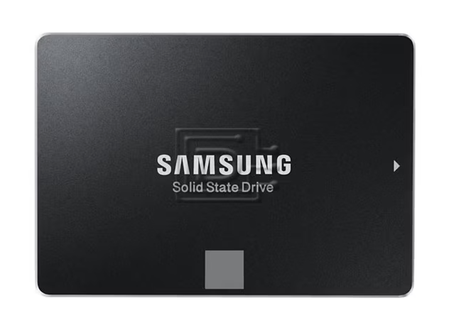
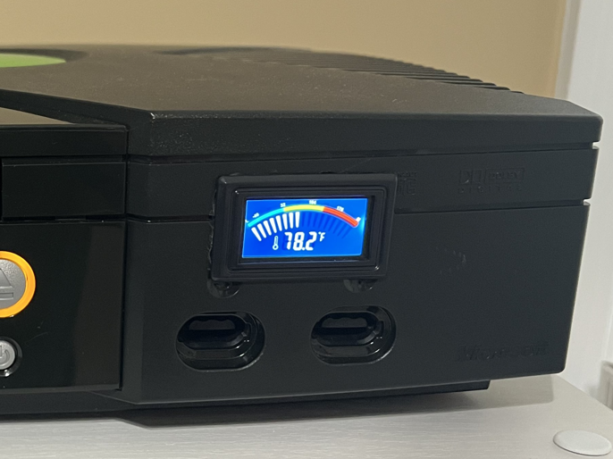
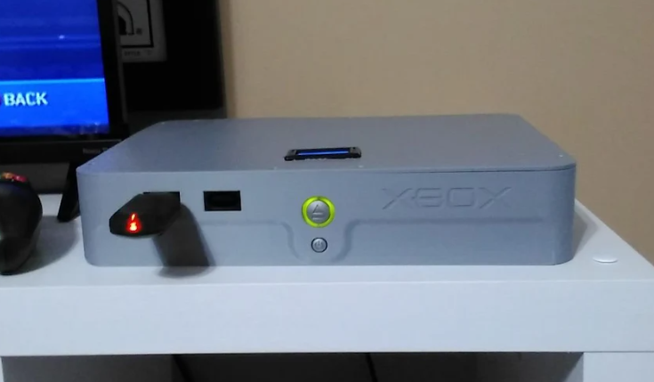

More reliable hardware
Upgrades like better cooling and replaced drives reduce failures and keep the system stable.

From practical upgrades to tasteful cosmetic changes, these mod options improve performance, reliability, and the classic Xbox experience without sacrificing authenticity.
Upgrades like better cooling and replaced drives reduce failures and keep the system stable.
Softmods, hard drive upgrades, and dashboard options bring the Xbox into 2026 while preserving the original feel.
LED ports, RGB lighting, and slim conversions give your console a polished, custom finish.
Most mods are designed to keep the original hardware intact and fully serviceable for the future.
These are the most popular upgrades I offer for Original Xbox consoles. Whether you want quiet operation, more storage, or a sleek custom build, there’s a smart option available.

Custom LED lighting for controller ports — choose colors or match your build.

Unlock homebrew, backups, dashboards, and modern features without hardware mods.
Hardware-based modding for maximum flexibility and recovery options.

Flash the onboard BIOS for modchip-free customization on supported revisions.

Remove the DVD drive entirely for silent, HDD-only operation.

Quieter, higher-quality fans to keep temperatures low without the jet noise.

Additional top-mounted cooling for heavy modded or long-play systems.

Internal RGB lighting for a clean glow or full arcade-style illumination.

Massive storage upgrades for games, emulators, and media libraries.

Live temperature readouts so you always know how your system is running.

Custom slim Xbox builds featuring reduced internal footprint, improved airflow, and a clean modern look — without losing the soul of the original console.
If you want a more reliable, quieter, or more customizable Xbox, I can help. Contact me with what you want and I’ll recommend the best upgrades for your system.
Request Repair